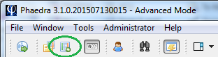
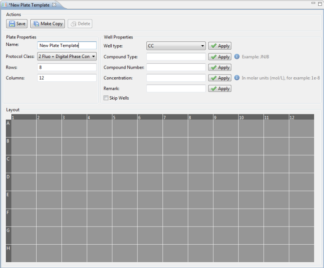
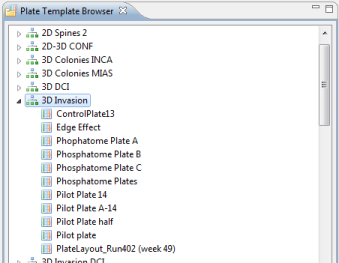
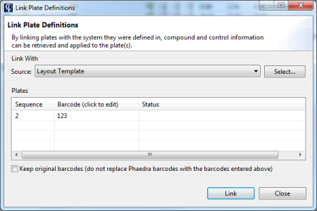
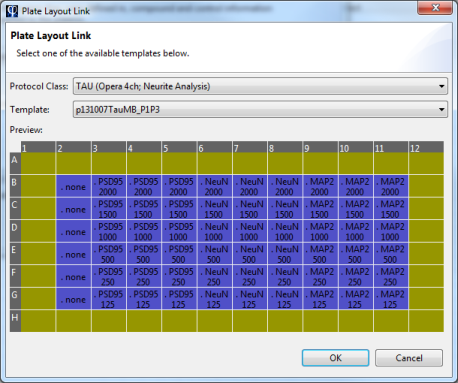
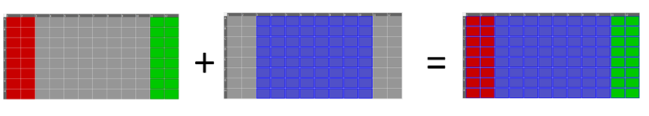
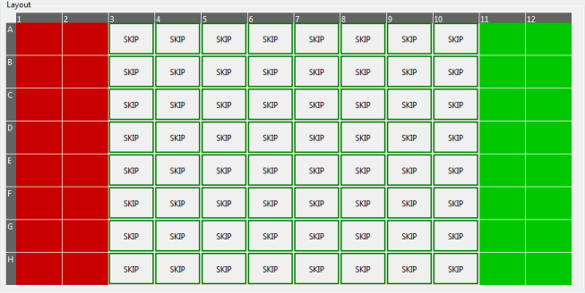

As discussed in the topic Linking Plate Definitions, a plate can be linked either against a plate definition (stored in an external plate management system) or against a plate layout template (created and stored in Phaedra). This topic explains how to create and use a plate layout template.
To create a new plate layout template, select the Create New Plate Template button in the toolbar:

A plate template editor will open. In this view, you can fill the layout, in several steps:
- Specify a unique name for the layout, and the protocol it will be used for
- Specify the plate dimensions (rows x columns)
- Specify the control wells
- Specify the sample wells, including their compounds and concentrations

To assign a well type, a compound or a concentration to a well, follow these steps:
- Select one or more wells
- In the Well Properties panel, select a well type and click Apply
- Enter a compound type and number, and click Apply
- Enter a compound concentration and click Apply
When the layout has been completed, click the Save button to save the template.
Browsing plate layout templates
To see which templates are currently available in Phaedra, select the Plate Template Browser button in the toolbar:

The Plate Template Browser view will open, showing a list of protocols, and a list of available templates underneath each protocol.
Double-click on a template to view its details. If you are the author of the template, you can modify it and save the changes by clicking the Save button again.

Using a plate layout template
To link a plate with a plate layout template, follow the steps outlined in the topic Linking Plate Defintions. But instead of selecting a plate management system in the list, select the option Layout Template.

Click the Select... button to choose the template you want to use.

Click Ok and proceed to link the plate as normally.
Combining plate definitions and plate layout templates
In some cases, it may be useful to use a plate definition and a plate layout template together. For example, consider a scenario where the plate definition contains only sample information: it specifies sample well locations, compounds and concentrations, but not control well information.
In such a case, a plate layout template may be used to complement the plate definition, resulting in a complete plate layout.

To create such a 'complementary' plate layout template, follow these steps:
- Create the layout as described previously.
- For all wells that have already been defined by the plate definition (e.g. all the sample wells), you must check the Skip Wells option. If you do not do this, the template will override the information retrieved from the plate definition, resulting in an incorrect layout!
- Save the layout
- Link the plates with their plate definition first, then link them again, but this time with the layout template.
